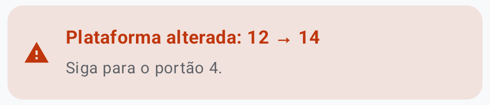
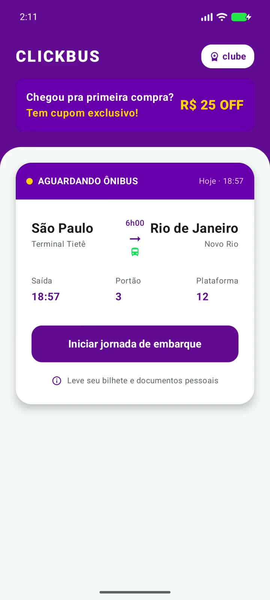
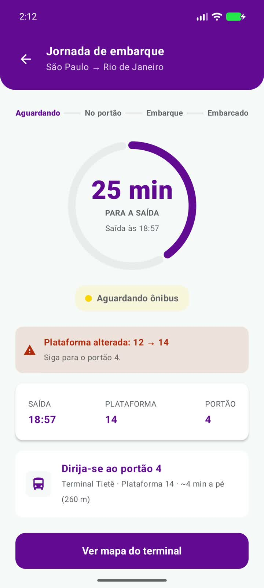
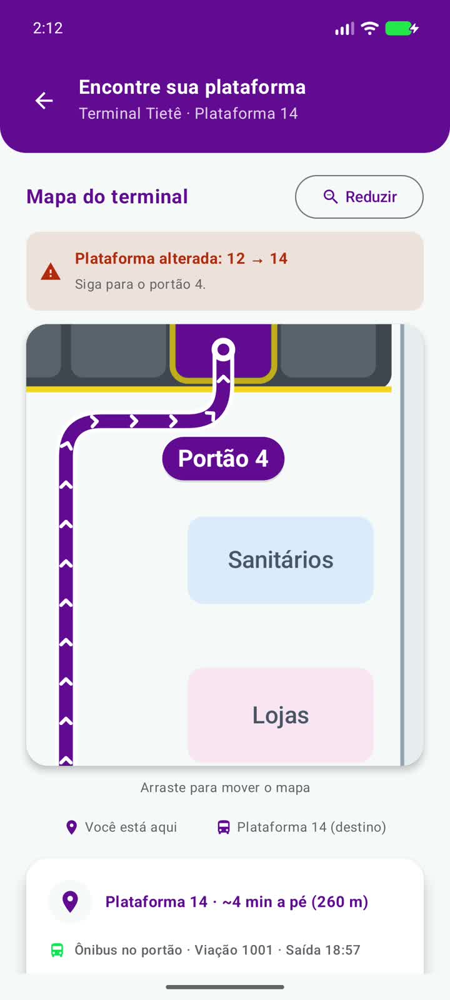
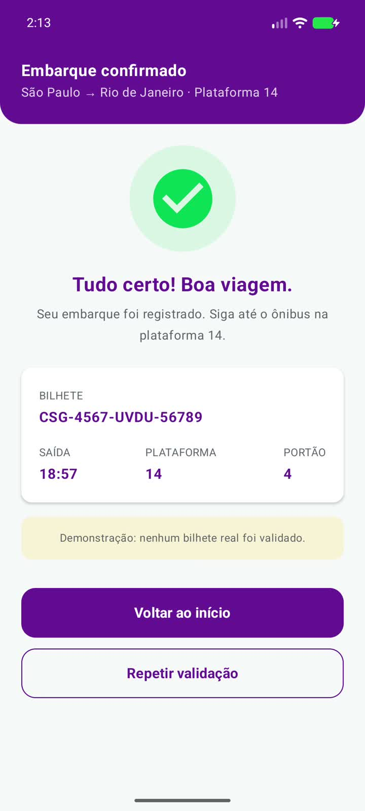

B
o
a
r
d
l
y
Do bilhete ao portão de embarque
A passagem já está
no celular.
O
embarque
ainda
depende
do
painel
do
terminal.
No terminal, o passageiro fica sem resposta
Qual é a minha plataforma?
Mudou e ninguém me avisou.
Para que lado fica o portão?
Challenge ClickBus 2026 · O desafio
Conectar o mundo digital (app) com o mundo físico (terminal rodoviário).
A solução
Boardly
Do bilhete ao portão de embarque.
acompanha
avisa
guia
1 DE 4
Acompanhar
Viagem do dia, etapas do embarque e minutos para a saída.
2 DE 4
Avisar

O terminal mudou a plataforma. O app avisa na hora, em todas as telas.
3 DE 4
Guiar
Você está aqui. A rota leva até a plataforma certa.
4 DE 4
Embarcar
Bilhete pronto para o totem ou o motorista. Embarque confirmado.




Como foi feito
MVP Android em Kotlin e Jetpack Compose.
Nesta versão, os eventos do terminal são simulados.
Valor para quem está no terminal
Passageiro
Sabe para onde ir e o que mudou.
Terminal
A informação chega a quem precisa.
ClickBus
O app continua útil depois da compra.
Próximos passos
Do protótipo ao terminal
1
Dados do terminal em tempo real
2
QR do bilhete lido pelo totem
3
Notificações de troca de plataforma
4
Mapa real do terminal
Boardly
Do bilhete ao portão de embarque
Challenge ClickBus 2026 · FIAP